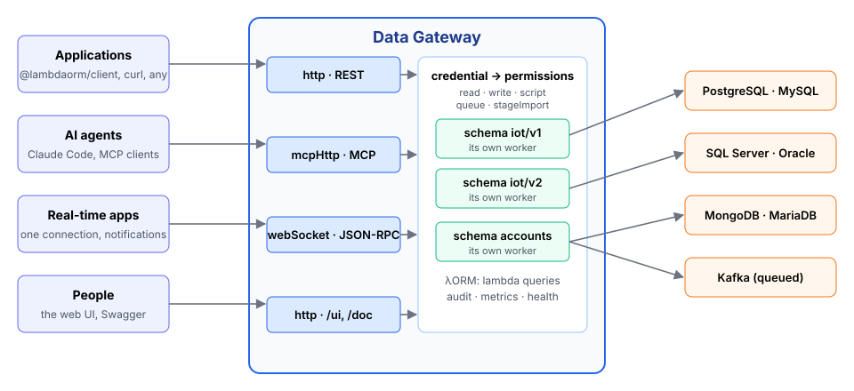
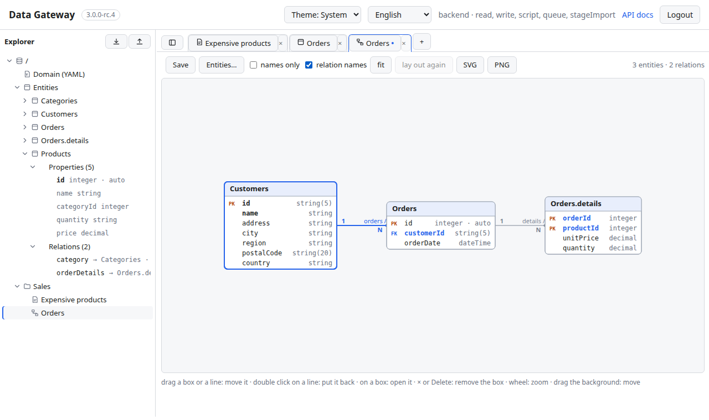

Erste Schritte
Diese Anleitung führt von einem leeren Ordner bis zur Datenbank northwind, die von einem Data Gateway veröffentlicht wird: seine REST API, seine Web-UI, MCP für einen KI-Agenten und seine WebSocket API. Sie dauert etwa zehn Minuten und benötigt nur Docker (mit Docker Compose).

1. Die Dateien
Erstellen Sie einen Ordner mit dieser Struktur (die Dateien können aus diesem Wiki heruntergeladen werden):
northwind/
├── docker-compose.yml ← PostgreSQL and the Data Gateway
├── data-gateway.config.yaml ← how the gateway exposes the schema and who can use it
├── data.json ← the rows of northwind, to import
└── workspace/
└── lambdaORM.yaml ← the λORM schema: domain, mapping, source, stage
mkdir -p northwind/workspace && cd northwind
W=https://lambda-orm.github.io/wiki/data-gateway/northwind
curl -sO $W/docker-compose.yml
curl -sO $W/data-gateway.config.yaml
curl -sO $W/data.json
curl -s $W/lambdaORM.yaml -o workspace/lambdaORM.yaml
Das Schema: workspace/lambdaORM.yaml
Ein normales λORM-Schema: die Domäne (Entitäten, Eigenschaften, Beziehungen), das
Mapping auf die Tabellen, eine Quelle (PostgreSQL) und der Stage default. Ein Auszug:
domain:
entities:
- name: Products
primaryKey: ["id"]
uniqueKey: ["name", "supplierId"]
properties:
- { name: id, type: integer, required: true, autoIncrement: true }
- { name: name, required: true }
- { name: categoryId, type: integer }
- { name: price, type: decimal, default: 0 }
relations:
- { name: category, from: categoryId, entity: Categories, to: id, target: products }
# … Categories, Customers, Orders, Orders.details
infrastructure:
mappings:
- name: default
entities:
- name: Products
mapping: Products
properties:
- { name: id, mapping: ProductID }
- { name: name, mapping: ProductName }
# …
sources:
- name: Northwind
dialect: PostgreSQL
mapping: default
connection: ${NORTHWIND_DB} # an environment variable: the gateway gives it to this schema
stages:
- name: default
sources:
- name: Northwind
Das Gateway: data-gateway.config.yaml
orm:
workspacePath: /workspace # the folder with lambdaORM.yaml (a single schema: served at the root)
schemas:
- path: "" # that schema: it receives only the variables given here
env: { NORTHWIND_DB: $NORTHWIND_DB }
authentication:
adapter: local
type: apikey
header: X-Api-Key
keys:
- { name: reader, value: $READER_KEY, permissions: [ read ] }
- { name: backend, value: $BACKEND_KEY, permissions: [ read, write, script, queue, stageImport ] }
scripts:
enabled: true
transports:
http:
port: 8080
ui: { enabled: true }
mcpHttp:
port: 8081
webSocket:
port: 8083
- Zwei Zugangsdaten:
readerdarf nur lesen;backenddarf außerdem schreiben, Skripte ausführen, Warteschlangen nutzen und importieren. - Drei Transporte: REST und die UI auf 8080, MCP auf 8081, WebSocket auf 8083.
- Die Variablen des Schemas: Jedes Schema erhält zu seiner Sicherheit nur seine eigenen Variablen;
envübergibt ihm die Verbindung.
docker-compose.yml
services:
postgres:
image: postgres:16-alpine
environment:
POSTGRES_USER: northwind
POSTGRES_PASSWORD: northwind
POSTGRES_DB: northwind
healthcheck:
test: [ "CMD", "pg_isready", "-U", "northwind" ]
interval: 2s
retries: 30
data-gateway:
image: flaviorita/data-gateway:3.0.0-rc.4
depends_on:
postgres: { condition: service_healthy }
environment:
NORTHWIND_DB: '{"host":"postgres","port":5432,"user":"northwind","password":"northwind","database":"northwind"}'
READER_KEY: ${READER_KEY:-reader-demo-key}
BACKEND_KEY: ${BACKEND_KEY:-backend-demo-key}
volumes:
- ./data-gateway.config.yaml:/config/data-gateway.config.yaml:ro
- ./workspace:/workspace
ports:
- "${HTTP_PORT:-8080}:8080"
- "${MCP_PORT:-8081}:8081"
- "${WS_PORT:-8083}:8083"
Die Keys reader-demo-key und backend-demo-key sind nur für dieses Beispiel gedacht: Geben Sie READER_KEY und
BACKEND_KEY bei jeder echten Verwendung lange Zufallswerte (openssl rand -hex 24).
2. Starten
docker compose up -d
curl http://localhost:8080/schemas
[ { "path": "", "status": "ready", "since": "2026-11-18T14:07:33.561Z", "restarts": 0 } ]
Das Schema ist ready: Es wird an der Wurzel bereitgestellt (/execute, /mcp, …). Steht dort error, nennt
reason den Grund (eine nicht erreichbare Datenbank, eine nicht angegebene Variable); das Gateway versucht es weiterhin
erneut.
3. Die Tabellen erstellen
Das Image enthält die λORM-CLI. push erstellt die Tabellen des Stages aus dem Schema:
docker compose exec data-gateway lambdaorm push -w /workspace -s default
create table Categories
…
add foreign key Order Details_product_FK
4. Die Daten importieren, über die REST API
Der Import erfordert die Berechtigung stageImport, daher kann reader es nicht:
curl -X POST http://localhost:8080/stages/default/import -H "X-Api-Key: reader-demo-key" \
-H "Content-Type: application/json" -d @data.json
{ "error": "ForbiddenError", "message": "the credential \"reader\" does not have the \"stageImport\" permission" }
backend dagegen schon (die Antwort ist 204, und der Import hinterlässt eine Audit-Zeile im Log):
curl -X POST http://localhost:8080/stages/default/import -H "X-Api-Key: backend-demo-key" \
-H "Content-Type: application/json" -d @data.json
docker compose logs data-gateway | grep '"type":"audit"'
{"type":"audit","time":"2026-11-18T14:07:39.720Z","schema":"","transport":"http","credential":"backend","operation":"stageImport","stage":"default","durationMs":189,"result":"ok"}
5. Abfragen
curl -X POST "http://localhost:8080/execute?format=beautiful" -H "X-Api-Key: reader-demo-key" \
-H "Content-Type: application/json" -d '{
"query": "Products.filter(p => p.price > minPrice).map(p => ({ name: p.name, category: p.category.name, price: p.price })).sort(p => desc(p.price)).page(1, 3)",
"data": { "minPrice": 50 }
}'
[
{ "name": "Côte de Blaye", "category": "Beverages", "price": 263.5 },
{ "name": "Thüringer Rostbratwurst", "category": "Meat/Poultry", "price": 123.79 },
{ "name": "Mishi Kobe Niku", "category": "Meat/Poultry", "price": 97 }
]
p.category.name folgt der Beziehung: λORM verknüpft Categories. plan zeigt, wie, ohne die Abfrage auszuführen:
curl -X POST "http://localhost:8080/plan?format=beautiful" -H "X-Api-Key: reader-demo-key" -H "Content-Type: application/json" \
-d '{"query": "Products.filter(p => p.price > minPrice).map(p => ({ name: p.name, category: p.category.name, price: p.price })).sort(p => desc(p.price)).page(1, 3)"}'
{
"entity": "Products",
"dialect": "PostgreSQL",
"source": "Northwind",
"sentence": "SELECT p.ProductName AS \"name\", c.CategoryName AS \"category\", p.UnitPrice AS \"price\" FROM Products p INNER JOIN Categories c ON c.CategoryID = p.CategoryID WHERE p.UnitPrice > $1 ORDER BY p.UnitPrice desc OFFSET 0 LIMIT 3 "
}
6. Schreiben und die Berechtigungen
Eine schreibende Abfrage mit reader:
curl -X POST http://localhost:8080/execute -H "X-Api-Key: reader-demo-key" -H "Content-Type: application/json" \
-d '{"query": "Products.update(p => ({ price: price })).filter(p => p.id == id)", "data": {"id": 38, "price": 270}}'
{ "error": "ForbiddenError", "message": "the credential \"reader\" does not have the \"write\" permission" }
Das Gateway hat sie abgelehnt, bevor sie die Datenbank erreichte, weil die Abfrage kein Select ist. Mit backend
liefert sie die Anzahl der aktualisierten Zeilen, 1, und hinterlässt eine Audit-Zeile.
7. Ein Skript: mehrere Abfragen in einer Transaktion
curl -X POST "http://localhost:8080/script?format=beautiful" -H "X-Api-Key: backend-demo-key" -H "Content-Type: application/json" -d '{
"script": "orders = orm.execute(\"Orders.filter(p => p.customerId == customerId).map(p => p.id)\", { customerId: customerId }); { customer: customerId, orders: orders.length() }",
"data": { "customerId": "ALFKI" }
}'
{ "customer": "ALFKI", "orders": 6 }
Ein Skript bestimmt den Status der Antwort mit throw { status, message }: Ein customer not found mit status: 404
liefert 404. Siehe Skript.
8. Die API-Dokumentation
http://localhost:8080/doc/ ist die Swagger UI der REST API. Authorize fragt nach dem API-Key im Header
X-Api-Key; danach kann jede Methode direkt auf der Seite ausprobiert werden.


9. Die UI
Öffnen Sie http://localhost:8080/ui/:

Anmelden mit dem API-Key (die Schaltfläche Anzeigen zeigt das Eingegebene an):

Links der Explorer: das Schema, seine Domäne, seine Entitäten mit ihren Eigenschaften und Beziehungen. Wählen Sie
das Schema /, schreiben Sie eine Abfrage (der Editor vervollständigt beim Tippen Entitäten und Eigenschaften), ihre
Daten, und klicken Sie auf execute (Strg+Enter). Das Ergebnis kann als Tabelle, Baum, JSON oder YAML angezeigt,
kopiert und exportiert werden:


Speichern Sie sie mit Strg+S: ein Name, eine Beschreibung und ein Ordner (Ordner werden mit dem + des Schemas erstellt):

Ein Doppelklick auf eine Entität (oder ihre Schaltfläche Öffnen) zeigt ihr Formular: Eigenschaften, Beziehungen, Schlüssel und Indizes, ihre Zeilen und ihr Diagramm.


Ein Diagramm: das + eines Ordners → Neues Diagramm, wählen Sie Orders und Nachbarn hinzufügen:

Die Kästen werden automatisch angeordnet; sie und die Linien lassen sich ziehen, und Speichern behält sie dort, wo sie abgelegt wurden:

Alles wird unter UI erklärt.
10. Ein KI-Agent über MCP
Mit Claude Code:
claude mcp add --transport http northwind http://localhost:8081/mcp --header "X-Api-Key: reader-demo-key"
Fragen Sie ihn dann zum Beispiel: „Wie viele Produkte hat jede Kategorie?“. Der Agent sieht die Tools, die die
Zugangsdaten reader verwenden dürfen (orm_execute, orm_plan, schema_domain, …; nicht die schreibenden), mit der
Domäne von northwind in ihren Beschreibungen, und antwortet mit einer Abfrage wie:
{ "name": "orm_execute", "arguments": { "query": "Categories.map(p => ({ category: p.name, products: count(p.products.id) }))" } }
[ { "category": "Grains/Cereals", "products": 7 }, { "category": "Beverages", "products": 12 }, … ]
Mit reader kann der Agent nichts ändern, egal worum er gebeten wird. Siehe MCP.
11. WebSocket
Eine Verbindung für alle Operationen, mit Benachrichtigungen. Mit @lambdaorm/client:
import { orm } from '@lambdaorm/client'
await orm.init('ws://localhost:8083/', { headers: { 'X-Api-Key': 'reader-demo-key' } })
const customers = await orm.execute('Customers.filter(p => p.country == country).map(p => p.name)', { country: 'Argentina' })
// [ { name: 'Cactus Comidas para llevar' }, { name: 'Océano Atlántico Ltda.' }, { name: 'Rancho grande' } ]
await orm.end()
oder direkt mit den JSON-RPC-Nachrichten:
→ { "jsonrpc": "2.0", "id": 1, "method": "query.execute", "params": { "query": "Customers.filter(p => p.country == country).map(p => p.name)", "data": { "country": "Argentina" } } }
← { "jsonrpc": "2.0", "id": 1, "result": [ { "name": "Cactus Comidas para llevar" }, { "name": "Océano Atlántico Ltda." }, { "name": "Rancho grande" } ] }
Siehe WebSocket API.
12. Beenden
docker compose down # keeps nothing: the database is in the container
Nächste Schritte
- Mehrere Schemas, jedes mit eigener Route, und die Umgebung jedes Schemas: Konfiguration.
- Zugangsdaten pro Schema oder pro Transport, das Audit, die Limits: Sicherheit.
- Jede REST-Methode: REST API. Produktion: Betrieb.